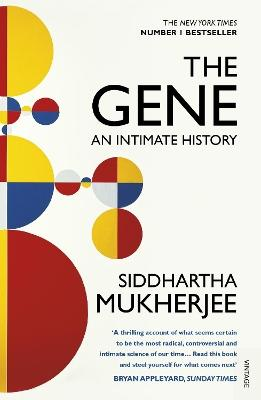
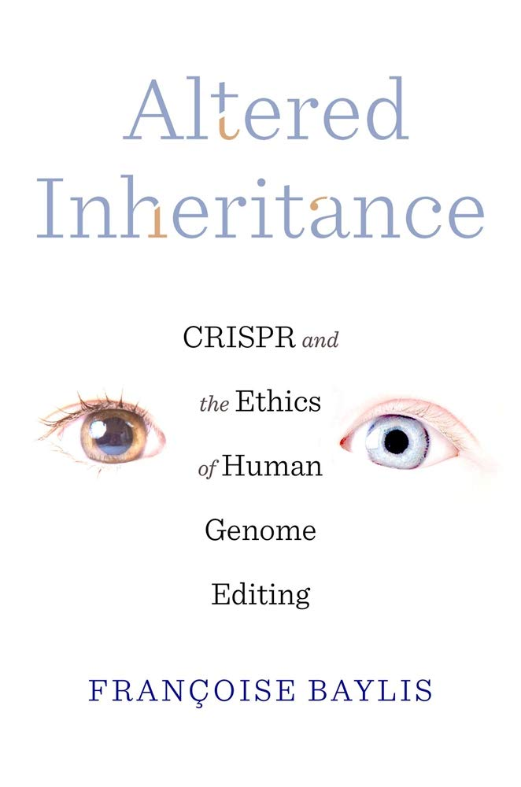

Hapësira e eksperimenteve sociale dhe etike është një fushë e ndërlidhur me sociologjinë, psikologjinë dhe filozofinë, e cila shqyrton sjelljen njerëzore në rrethana të ndryshme dhe pasojat e saj morale.
Këtu është një udhëzues mbi temat dhe burimet që eksplorojnë ndikimin etik dhe social të bioteknologjisë. Fusha e bioteknologjisë hap shumë diskutime të ndërlikuara mbi etikën,ndikimet sociale dhe përgjegjësitë njerëzore në përdorimin e teknologjive të avancuara.
Libra:
  CRISPR and the ethics of gene editing>Inteligjenca Artificiale (AI) ka një ndikim të thellë në shoqëri dhe ngrit një mori çështjesh etike dhe sociale. Disa nga çështjet kryesore përfshijnë pabarazinë dhe diskriminimin që mund të lindin nga algoritmet e AI, të cilat shpesh përjetësojnë paragjykime ekzistuese, duke ndikuar në punësim dhe shërbime publike. Përdorimi masiv i të dhënave personale për trajnimin e modeleve AI ngre pyetje për privatësinë dhe sigurinë e të dhënave, duke e bërë më të lehtë për keqbërësit të abuzojnë me informacionin e individëve. Automatizimi i mundshëm i industrive dhe humbja e vendeve të punës përbëjnë një tjetër shqetësim, pasi AI mund të zëvendësojë njerëzit në profesione të ndryshme. Po ashtu, përdorimi i AI në armët autonome dhe survejim masiv ngre dilema etike lidhur me përgjegjësinë dhe kontrollin. Përdorimi i AI gjithashtu mund të ndikojë te marrëdhëniet njerëzore, pasi mund të zëvendësojë ndërveprimin social dhe të çojë në varësi nga teknologjia. Për të trajtuar këto çështje, janë zhvilluar raporte dhe udhëzime etike, si ato nga Komisioni Evropian dhe Stanford AI100, dhe shumë organizata si AI Ethics Lab po punojnë për të siguruar përdorimin e përgjegjshëm të AI.
Disa organizata që merrën me etikën e AI: